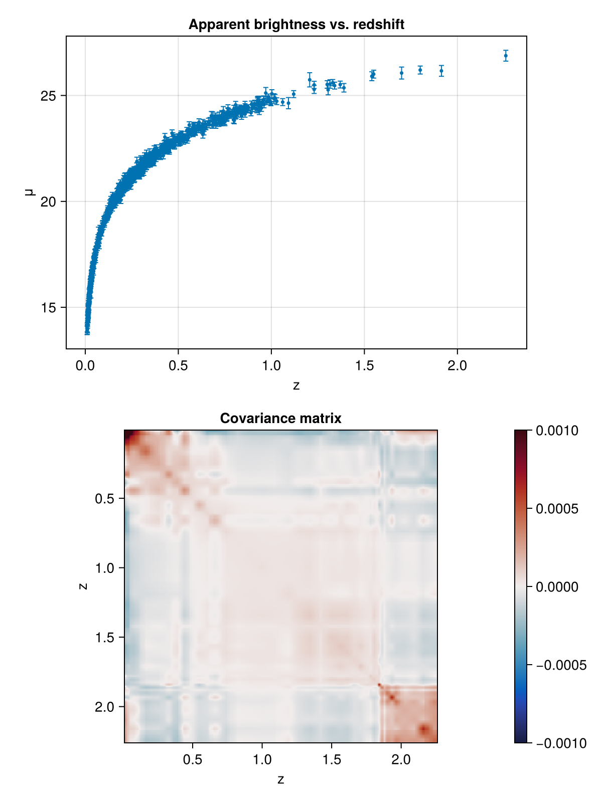
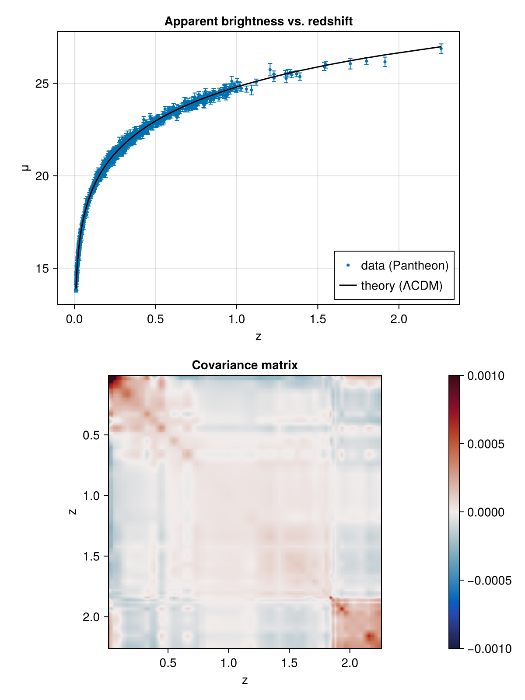
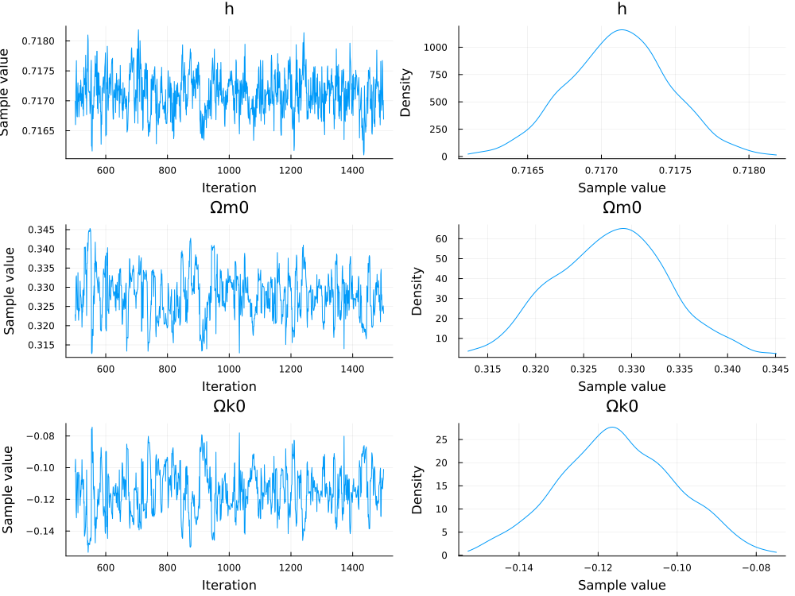
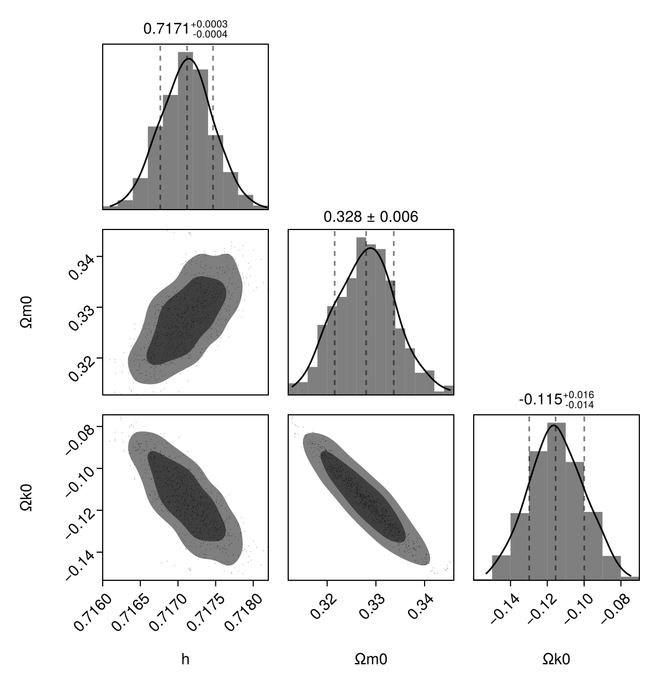
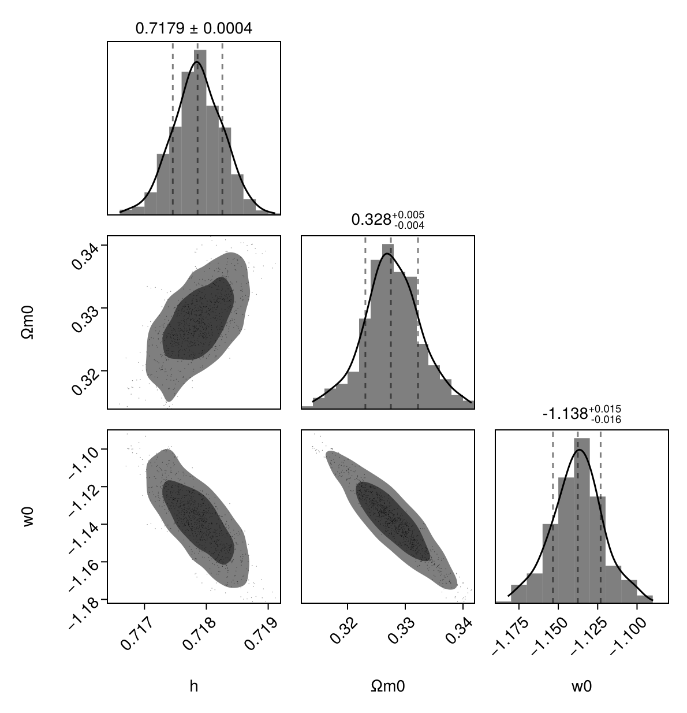
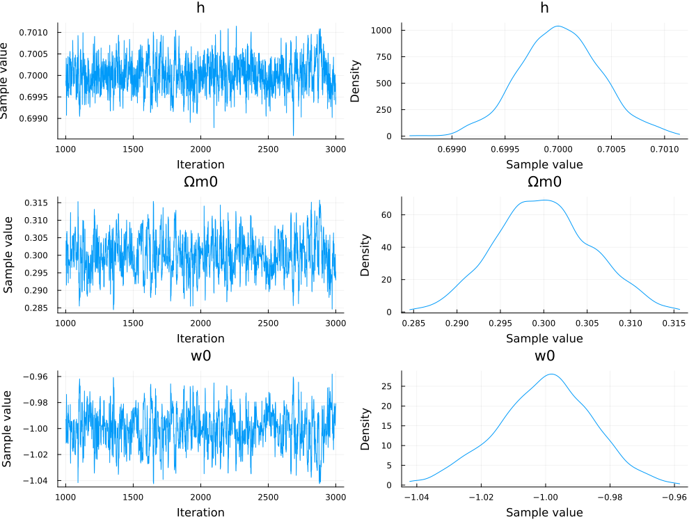
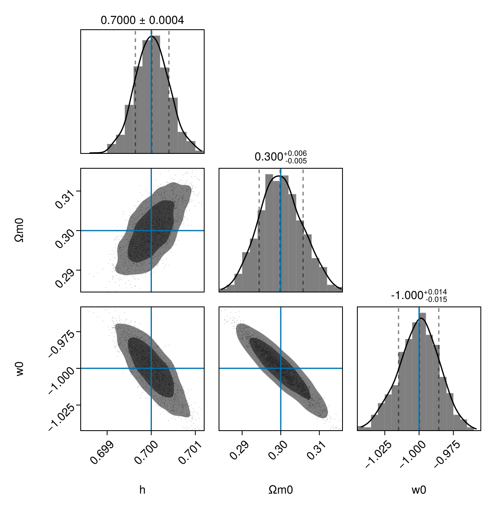
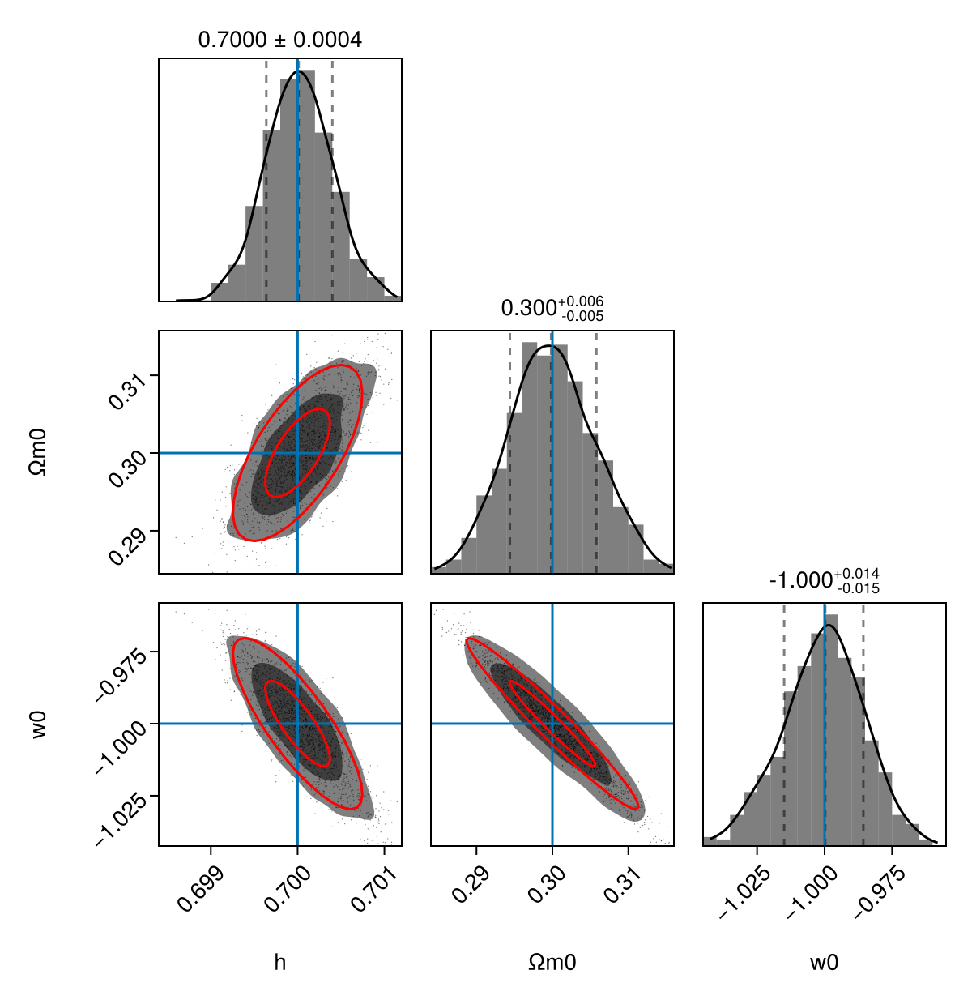

Fitting parameters and forecasting
This tutorial shows how to perform Bayesian parameter inference on a cosmological model by fitting it to data, and how to forecast parameter constraints from a covariance matrix that describes uncertainties and correlations of (unknown) observed data.
Pantheon supernova data
We load the Pantheon dataset. This includes redshifts and apparent magnitudes of over 1000 Type Ia supernovae.
using LinearAlgebra, DataFrames, CSV
# Read data table
data = download("https://raw.githubusercontent.com/dscolnic/Pantheon/master/lcparam_full_long.txt")
data = CSV.read(data, DataFrame, delim = " ", silencewarnings = true)
# Read covariance matrix of apparent magnitudes (mb)
C = download("https://raw.githubusercontent.com/dscolnic/Pantheon/master/sys_full_long.txt")
C = CSV.read(C, DataFrame, header = false) # long vector
C = collect(reshape(C[2:end, 1], (Int(C[1, 1]), Int(C[1, 1])))) # convert to matrix
# Sort data and covariance matrix with decreasing redshift
is = sortperm(data, :zcmb, rev = true)
C = C[is, is]
data = data[is, :]Let us plot the apparent magnitude as a function of redshift, and the covariance matrix:
using CairoMakie
fig = Figure(size = (600, 800))
ax1 = Axis(fig[1, 1:2], xlabel = "z", ylabel = "μ", title = "Apparent brightness vs. redshift")
scatter!(ax1, data.zcmb, data.mb; markersize = 5, label = "data (Pantheon)")
errorbars!(ax1, data.zcmb, data.mb, data.dmb; linewidth = 1, whiskerwidth = 5)
ax2 = Axis(fig[2, 1]; xlabel = "z", ylabel = "z", title = "Covariance matrix", yreversed = true, aspect = 1)
hm = heatmap!(ax2, extrema(data.zcmb), extrema(data.zcmb), C; colormap = :balance, colorrange = (-0.001, +0.001))
Colorbar(fig[2, 2], hm)
fig
Predicting luminosity distances
To predict luminosity distances
\[d_L = \frac{r}{a} = \chi \, \mathrm{sinc} (\sqrt{k} \chi), \qquad \text{where} \qquad \chi = c \, (t_0 - t)\]
theoretically, we solve the w0waCDM model:
using SymBoltz, ModelingToolkit
g = SymBoltz.metric()
K = SymBoltz.curvature(g)
X = SymBoltz.w0wa(g; analytical = true)
M = RMΛ(K = K, Λ = X)
M = change_independent_variable(M, M.g.a; add_old_diff = true)
pars = Dict(M.r.Ω₀ => 9.3e-5, M.m.Ω₀ => 0.3, M.K.Ω₀ => 0.0, M.g.h => 0.7, M.X.w0 => -1.0, M.X.wa => 0.0, M.t => 0.0, M.r.T₀ => NaN, M.X.cₛ² => NaN)
zs = data.zcmb
as = 1 ./ (zs .+ 1)
prob = CosmologyProblem(M, pars; pt = false, ivspan = (minimum(as), 1.0))
# TODO: use luminosity_distance # TODO: move SII and getters into package
using SymbolicIndexingInterface
geta = getu(prob.bg, M.g.a)
gett = getu(prob.bg, M.t)
geth = getp(prob.bg, M.g.h)
getΩk0 = getp(prob.bg, M.K.Ω₀)
function μ(a, t, h, Ωk0 = 0.0)
t0 = t[end] # time today
χ = t0 .- t
r = @. real(sinc(√(-Ωk0+0im)*χ/π) * χ) # Julia's sinc(x) = sin(π*x) / (π*x)
H0 = SymBoltz.H100 * h
dLs = @. r / a * SymBoltz.c / H0 # luminosity distance in meters
return 5 * log10.(dLs / (10*SymBoltz.pc)) # distance modulus
end
μ(sol::CosmologySolution, geta, gett, geth, getΩk0) = μ(geta(sol.bg), gett(sol.bg), geth(sol.bg), getΩk0(sol.bg))
# Show example predictions
Mb = -19.3 # absolute supernova brightness (constant since SN-Ia are standard candles)
bgopts = (alg = SymBoltz.Tsit5(), reltol = 1e-5, maxiters = 1e3)
sol = solve(prob; bgopts, saveat = as, save_start = true, save_end = true, term = nothing)
μs = μ(sol, geta, gett, geth, getΩk0)[begin:end-1] # remove NaN today
mbs = μs .+ Mb
lines!(ax1, zs, mbs; color = :black, label = "theory (ΛCDM)")
axislegend(ax1, position = :rb)
fig
Bayesian inference
To perform bayesian inference, we define a probabilistic model in Turing.jl:
using Turing
@model function supernova(zs, mbs, C⁻¹, probgen, geta, gett, geth, getΩk0; Mb = Mb, Ωr0 = 9.3e-5, bgopts = bgopts, term = nothing, verbose = false)
# Parameter priors
h ~ Uniform(0.1, 1.0)
Ωm0 ~ Uniform(0.0, 1.0)
Ωk0 ~ Uniform(-1.0, +1.0)
w0 ~ Uniform(-2.0, 0.0)
wa ~ Uniform(-1.0, +1.0)
ΩX0 = 1 - Ωr0 - Ωm0 - Ωk0
p = [h, Ωm0, Ωk0, w0, wa, ΩX0]
prob = probgen(p)
as = 1 ./ (zs .+ 1)
sol = solve(prob; bgopts, term, saveat = as, save_end = true)
if !issuccess(sol)
verbose && println("Discarding solution with illegal parameters Ωm0=$Ωm0, Ωk0=$Ωk0")
Turing.@addlogprob! -Inf
return nothing # illegal parameters
end
# Theoretical prediction
μs_pred = μ(sol, geta, gett, geth, getΩk0)[begin:end-1]
mbs_pred = μs_pred .+ Mb
# Compare predictions to data
Δmb = mbs .- mbs_pred
χ² = transpose(Δmb) * C⁻¹ * Δmb
Turing.@addlogprob! -1/2 * χ²
return nothing
#return D ~ MvNormal(pred, C) # multivariate Gaussian
#return μs ~ MvNormal(μs_pred, Diagonal(Δμs .^ 2)) # multivariate Gaussian
end
# TODO: full covariance
p = [M.g.h, M.m.Ω₀, M.K.Ω₀, M.X.w0, M.X.wa, M.X.Ω₀]
probgen = SymBoltz.parameter_updater(prob, p; build_initializeprob = Val{false})
sn_w0waCDM = supernova(data.zcmb, data.mb, inv(Diagonal(C)), probgen, geta, gett, geth, getΩk0);
sn_ΛCDM = fix(sn_w0waCDM, w0 = -1.0, wa = 0.0);We can now sample from the model to obtain a MCMC chain for the ΛCDM model:
chain = sample(sn_ΛCDM, NUTS(), 1000; initial_params = (h = 0.5, Ωm0 = 0.5, Ωk0 = 0.0))
import Plots, StatsPlots # don't collide with Makie
Plots.plot(chain)
Finally, we can visualize the high-dimensional chain with a corner plot using PairPlots.jl:
using PairPlots
layout = (
PairPlots.Scatter(),
PairPlots.Contourf(sigmas = 1:2),
PairPlots.MarginHist(),
PairPlots.MarginDensity(color = :black),
PairPlots.MarginQuantileText(color = :black, font = :regular),
PairPlots.MarginQuantileLines(),
)
pp = pairplot(chain => layout)
We can easily repeat this for another model:
sn_w0CDM_flat = fix(sn_w0waCDM, Ωk0 = 0.0, wa = 0.0);
chain = sample(sn_w0CDM_flat, NUTS(), 1000; initial_params = (h = 0.5, Ωm0 = 0.5, w0 = -1.0))
pp = pairplot(chain => layout)
Forecasting
Planning future cosmological surveys involves forecasting the precision of the constraints they are believed to place on parameters. Here we show how one can perform forecasting by combining SymBoltz.jl with Turing.jl.
To start, create another probabilistic supernova model, but instead of observed luminosity distances, we now use simulated luminosity distances in a fiducial cosmology:
sn_fc_w0waCDM = supernova(data.zcmb, mbs, inv(Diagonal(C)), probgen, geta, gett, geth, getΩk0);
sn_fc_w0CDM_flat = fix(sn_fc_w0waCDM, Ωk0 = 0.0, wa = 0.0);MCMC-driven forecasting
A general assumption-free, but expensive method to perform forecasting is to explore the likelihood using MCMC (as before, only against simulated data):
chain_fc = sample(sn_fc_w0CDM_flat, NUTS(), 2000)
Plots.plot(chain_fc)
truth = PairPlots.Truth((h = pars[M.g.h], Ωm0 = pars[M.m.Ω₀], w0 = pars[M.X.w0]))
pp_fc = pairplot(chain_fc => layout, truth)
Fisher forecasting
A less general, but cheaper method to perform forecasting is use a second-order approximation of the likelihood around the mean of the probability distribution (i.e. maximum of the likelihood). This technique is called Fisher forecasting, and requires calculation of the Fisher (information) matrix
\[Fᵢⱼ = -\left⟨\frac{∂^2 \log P(θ)}{∂θᵢ \, ∂θⱼ}\right⟩.\]
This effectively measures how quickly the likelihood falls from the maximum in different directions in parameter space. Under certain assumptions, the Fisher matrix is the inverse of the covariance matrix $C = F⁻¹$.
First, we ask Turing to estimate the maximum likelihood mode of the probabilistic model:
maxl_fc = maximum_likelihood(sn_fc_w0CDM_flat; initial_params = [0.5, 0.5, -1.0]) # TODO: or MAP?ModeResult with maximized lp of -0.00
[0.699999879686503, 0.29999980132324067, -0.9999981637752207]As expected, the maximum likelihood corresponds to our chosen fiducial parameters. Nevertheless, the returned mode estimate object offers convenience methods that greatly simplifies our following calculations. Next, we calculate the Fisher matrix from the maximum likelihood, and invert it to get the covariance matrix:
using StatsBase
F_fc = informationmatrix(maxl_fc)
C_fc = inv(F_fc)3×3 Named Matrix{Float64}
A ╲ B │ h Ωm0 w0
──────┼──────────────────────────────────────
h │ 1.3903e-7 1.41587e-6 -4.54337e-6
Ωm0 │ 1.41587e-6 3.20947e-5 -8.15472e-5
w0 │ -4.54337e-6 -8.15472e-5 0.000220377Finally, we derive 68% (1σ) and 95% (2σ) confidence ellipses from the covariance matrix and draw them onto our corner plot:
function ellipse(C::Matrix, i, j, c = (0.0, 0.0); nstd = 1, N = 33)
σᵢ², σⱼ², σᵢⱼ = C[i,i], C[j,j], C[i,j]
θ = (atan(2σᵢⱼ, σᵢ²-σⱼ²)) / 2
a = √((σᵢ²+σⱼ²)/2 + √((σᵢ²-σⱼ²)^2/4+σᵢⱼ^2))
b = √(max(0.0, (σᵢ²+σⱼ²)/2 - √((σᵢ²-σⱼ²)^2/4+σᵢⱼ^2)))
a *= nstd # TODO: correct?
b *= nstd # TODO: correct?
cx, cy = c
ts = range(0, 2π, length=N)
xs = cx .+ a*cos(θ)*cos.(ts) - b*sin(θ)*sin.(ts)
ys = cy .+ a*sin(θ)*cos.(ts) + b*cos(θ)*sin.(ts)
return xs, ys
end
for i in eachindex(IndexCartesian(), C_fc)
ix, iy = i[1], i[2]
ix >= iy && continue
μx = maxl_fc.values[ix]
μy = maxl_fc.values[iy]
for nstd in 1:2
xs, ys = ellipse(C_fc.array, ix, iy, (μx, μy); nstd)
lines!(pp_fc[iy,ix], xs, ys; color = :red)
end
end
pp_fc